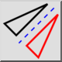

M 鏡像反転
ツールバー/アイコン:

メニュー:
M 修正 > M 鏡像反転
ショートカット:
M, I
コマンド:
mirror | mi
説明
エンティティを与えられた軸に沿って鏡像反転します。
Usage
反転したいエンティティを選択します。
このツールを始めてください。
マウスを備えた鏡軸の上の最初のポイントを指定するか、あるいはコマンドラインの中で座標を入力してください。
鏡軸の上の２番目のポイントを指定します。
鏡像反転ダイアログが表示されます。
オリジナルのエンティティを維持せずに、エンティティを映す場合は、「オリジナルを削除」に、それらをコピーするためは「オリジナルを維持」に設定します。
新しいエンティティはオリジナルと同じ画層に置かれ、同じ属性があります。
現在の画層および現在の属性を代わりに使用するためには、「現在の画層および属性を使用」をチェックしてください。
エンティティを反転するのに「OK」をクリックします。